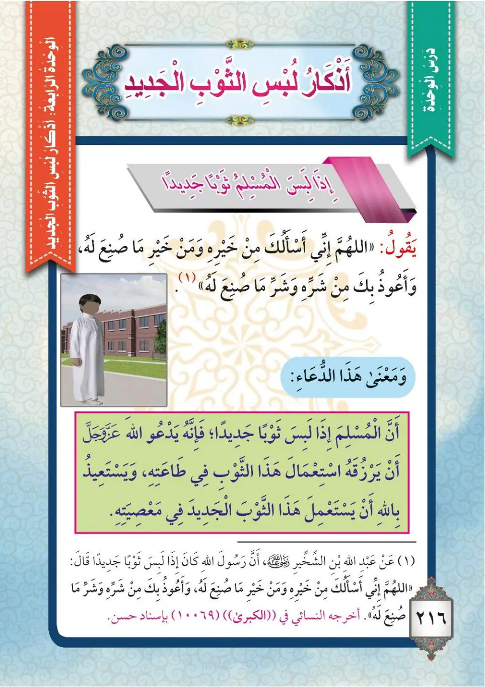

Stage 3·المرحلة الثالثة💬 Unit 1
أَذْكَارُ لِبْسِ الثَّوْبِ الْجَدِيدِ The Adhkar of Wearing a New Garment
From the Textbookp. 217

إِذَا لَبِسَ الْمُسْلِمُ ثَوْبًا جَدِيدًا يُشْرَعُ لَهُ أَنْ يَدْعُوَ اللهَ تَعَالَى بِمَا كَانَ النَّبِيُّ ﷺ يَدْعُو بِهِ، فَيَسْأَلُ اللهَ تَعَالَى أَنْ يَرْزُقَهُ اسْتِعْمَالَ هَذَا الثَّوْبِ فِي طَاعَتِهِ، وَيَسْتَعِيذُ بِاللهِ أَنْ يَسْتَعْمِلَهُ فِي مَعْصِيَتِهِ.
Idha labisa al-muslimu thawban jadidan yushra'u lahu an yad'uwa Allaha ta'ala bima kana an-nabiyyu ﷺ yad'u bihi, fayas'alu Allaha ta'ala an yarzuqahu isti'mala hadha ath-thawbi fi ta'atih, wa yasta'idhu billahi an yasta'milahu fi ma'siyatihi.
When a Muslim wears a new garment, it is prescribed for him to supplicate to Allah the Exalted with what the Prophet ﷺ used to supplicate, asking Allah the Exalted to enable him to use this garment in His obedience, and seeking refuge with Allah from using it in disobedience.
முஸ்லிம் புதிய ஆடையை அணியும்போது, நபி ﷺ கூறிய துஆவைக் கூறுவது சட்டப்படி நல்லது; அந்த ஆடையை இறைவனுக்குக் கீழ்ப்படிதலில் பயன்படுத்தும் வல்லமையைக் கேட்டு, அதை மறுப்பில் பயன்படுத்துவதிலிருந்து இறைவனிடம் பாதுகாப்புத் தேட வேண்டும்.
عَنْ عَبْدِ اللهِ بْنِ الشِّخِّيرِ رَضِيَ اللهُ عَنْهُ قَالَ: كَانَ النَّبِيُّ ﷺ إِذَا لَبِسَ ثَوْبًا جَدِيدًا قَالَ: «اللَّهُمَّ لَكَ الْحَمْدُ، أَنْتَ كَسَوْتَنِيهِ، أَسْأَلُكَ خَيْرَهُ وَخَيْرَ مَا صُنِعَ لَهُ، وَأَعُوذُ بِكَ مِنْ شَرِّهِ وَشَرِّ مَا صُنِعَ لَهُ». أَخْرَجَهُ التِّرْمِذِيُّ.
'An 'Abdillahi ibni ash-Shikhkhiri radiyallahu 'anhu qal: kana an-nabiyyu ﷺ idha labisa thawban jadidan qal: «Allahumma laka al-hamdu anta kasawtanihi, as'aluka khairahu wa khaira ma suni'a lahu, wa a'udhu bika min sharrihi wa sharri ma suni'a lahu». Akhrajahu at-Tirmidhi.
'Abdullah ibn ash-Shikhkhir, may Allah be pleased with him, said: When the Prophet ﷺ wore a new garment he would say: "O Allah, praise is for Yours; You have clothed me with it. I ask You for its goodness and the goodness of that for which it was made, and I seek refuge with You from its evil and the evil of that for which it was made." Narrated by At-Tirmidhi.
அப்துல்லாஹ் இப்னு அஷ்ஷிக்கீர் (ரலி) கூறினார்கள்: "புதிய ஆடையை அணியும்போது நபி ﷺ: 'இறைவா! உனக்கே அனைத்து துதியும்; நீ எனக்கு இதை அணிவித்தாய்; இதன் நன்மையையும், இது செய்யப்பட்ட நன்மையையும் உன்னிடம் கேட்கிறேன்; இதன் தீமையிலிருந்தும், இது செய்யப்பட்ட தீமையிலிருந்தும் உன்னிடம் பாதுகாப்புத் தேடுகிறேன்' என்று கூறினார்கள்." (திர்மிதி)
مَعْنَى الدُّعَاءِ: إِنَّ الْمُسْلِمَ إِذَا لَبِسَ ثَوْبًا جَدِيدًا يَدْعُو اللهَ تَعَالَى أَنْ يَرْزُقَهُ اسْتِعْمَالَ هَذَا الثَّوْبِ فِي طَاعَتِهِ، وَيَسْتَعِيذُ بِاللهِ أَنْ يَسْتَعْمِلَ هَذَا الثَّوْبَ الْجَدِيدَ فِي مَعْصِيَتِهِ.
Ma'na ad-du'a': Inna al-muslima idha labisa thawban jadidan yad'u Allaha ta'ala an yarzuqahu isti'mala hadha ath-thawbi fi ta'atihi, wa yasta'idhu billahi an yasta'mila hadha ath-thawba al-jadida fi ma'siyatihi.
The meaning of the supplication:
When a Muslim wears a new garment he asks Allah the Exalted to enable him to use this garment in His obedience, and seeks refuge with Allah from using this new garment in disobedience.
துஆவின் பொருள்:
முஸ்லிம் புதிய ஆடை அணியும்போது, அந்த ஆடையை இறைவனுக்குக் கீழ்ப்படிதலில் பயன்படுத்தும் வல்லமையைக் கேட்கிறான்; அந்தப் புதிய ஆடையை மறுப்பில் பயன்படுத்துவதிலிருந்து இறைவனிடம் பாதுகாப்புத் தேடுகிறான்.
وَإِذَا رَأَى الْمُسْلِمُ صَاحِبَهُ فِي ثَوْبٍ جَدِيدٍ يُشْرَعُ لَهُ أَنْ يَدْعُوَ لَهُ بِقَوْلِهِ: «أَبْلِ وَأَخْلِقِي»؛ فَعَنْ أُمِّ خَالِدٍ بِنْتِ خَالِدٍ رَضِيَ اللهُ عَنْهَا قَالَتْ: أُتِيَ النَّبِيُّ ﷺ بِثِيَابٍ فِيهَا خَمِيصَةٌ سَوْدَاءُ صَغِيرَةٌ، فَقَالَ: «مَنْ تَرَوْنَ نَكْسُوهَا هَذِهِ؟» فَسَكَتَ الْقَوْمُ، فَقَالَ: «ائْتُونِي بِأُمِّ خَالِدٍ»، فَأُتِيَ بِهَا تُحْمَلُ، فَأَخَذَ الْخَمِيصَةَ بِيَدِهِ فَأَلْبَسَهَا، وَقَالَ: «أَبْلِي وَأَخْلِقِي»، وَكَانَ فِيهَا عَلَمٌ أَخْضَرُ أَوْ أَصْفَرُ، فَقَالَ: «يَا أُمَّ خَالِدٍ، هَذَا سَنَاهُ»؛ وَ«سَنَاهُ» بِالْحَبَشِيَّةِ: حَسَنٌ. أَخْرَجَهُ الْبُخَارِيُّ.
Wa idha ra'a al-muslimu sahibahu fi thawbin jadidin yushra'u lahu an yad'uwa lahu bi-qawlih: «Abli wa akhliqi»; fe'an Ummi Khalidin binti Khalidin radiyallahu 'anha qalat: utiya an-nabiyyu ﷺ bi-thiyabin fiha khamisatun sawda'u saghirah, faqala: «Man tarawna naksuha hadhihi?» fasakata al-qawm, faqala: «I'tuni bi-Ummi Khalid», fa-utiya biha tahmilu, fa'akhadha al-khamisata biyadih fa'albashaha, wa qala: «Abli wa akhliqi», wa kana fiha 'alamun akhdaru aw asfar, faqala: «Ya Ummi Khalid, hadha sanahu»; wa «sanah» bil-habashiyyati: hasanun. Akhrajahu al-Bukhari.
And if a Muslim sees his companion wearing a new garment, it is prescribed for him to pray for him by saying: "May you wear it out and replace it." Umm Khalid bint Khalid, may Allah be pleased with her, said: "The Prophet ﷺ was brought some garments, among which was a small black cloak (khamisah). He asked: 'Whom do you think we should clothe with this?' The people kept silent. He said: 'Bring me Umm Khalid.' She was brought carried, and he took the cloak and put it on her with his own hand, then said: 'May you wear it out and replace it.' It had a green or yellow mark, so he said: 'O Umm Khalid, this is sanah' — and 'sanah' in Abyssinian means 'beautiful.'" Narrated by Al-Bukhari.
முஸ்லிம் தம் நண்பரை புதிய ஆடையில் கண்டால் "அப்லீ வ அக்லிகீ" (மடிந்துபோகட்டும்; மாற்றுக) என்று துஆ செய்வது நல்லது. உம்மு காலித் பின்த் காலித் (ரலி) கூறினார்கள்: "நபி ﷺ அவர்களிடம் ஆடைகள் கொண்டு வரப்பட்டன; அவற்றில் ஒரு சிறிய கருப்பு கஃப்தான் இருந்தது. 'இதை யாருக்கு அணிவிக்கலாம்?' என்று கேட்டார்கள்; மக்கள் அமைதியாக இருந்தனர். 'உம்மு காலித்தை என்னிடம் அழையுங்கள்' என்றார்கள்; அவள் சுமக்கப்பட்டு வந்தாள். கஃப்தானைக் கையால் எடுத்து அவளுக்கு அணிவித்து, 'அப்லீ வ அக்லிகீ' (மடியட்டும்; மாற்றுவாயாக) என்று கூறினார்கள். அதில் பச்சை/மஞ்சள் குறி இருந்தது; 'உம்மு காலிதே! இது ஸனாஹ்' — அபிசீனிய மொழியில் 'நல்லது' என்று சொன்னார்கள்." (புகாரி)